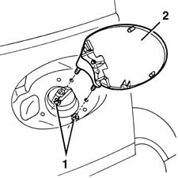
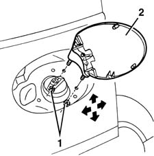

7025C10 fuel filler flap - r+r
- Path
- Procedures > 70 FITTINGS > 7025 COMPARTMENT LIDS > 7025C various flaps (exterior) > 7025C10 fuel filler flap - r+r
- Kind
- repair procedure (removal / refitting; the operation number is the code)
- Applies to
- all engines; all production periods
- Interactive page
- https://sloeber94.github.io/elrnDB-fMltpl/en/#/2892140
Applies to: all engines; all production periods
 Removing
Removing
 Refitting
Refitting1. Open the door and undo the nuts, working from inside the wing.
2. Remove the door.

Applies to: all engines; all production periods
Refitting
RemovingCheck that the door is undamaged.
1. Fit the door and screw in the nuts without tightening them.
2. Adjust the door position using the bolt slots.
The arrows indicate possible movements.

Applies to: all engines; all production periods
Tighten the fixing nuts.
Check that the door is correctly aligned with the body shell.
Check that the door opens and shuts properly.